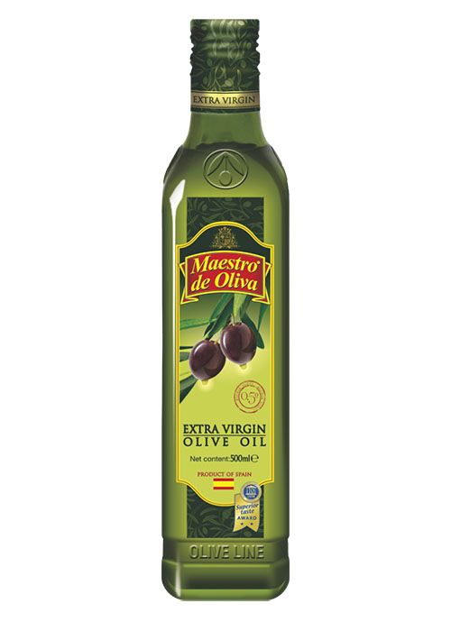

5 datos curiosos sobre el aceite de oliva
El aceite de oliva se produce desde hace más de 6.000 años, y su calidad se mide principalmente por su nivel de acidez: el extra virgen, el de mayor categoría, tiene menos de 0.8% de acidez.
A diferencia de lo que muchos creen, cocinar con aceite de oliva extra virgen a temperaturas moderadas no destruye todas sus propiedades; de hecho, sigue siendo una de las grasas más estables para cocinar en comparación con otros aceites vegetales.
Guardarlo en un lugar oscuro y fresco, lejos de la luz directa, es clave para conservar su sabor y sus antioxidantes por más tiempo.
← Volver a Blogs